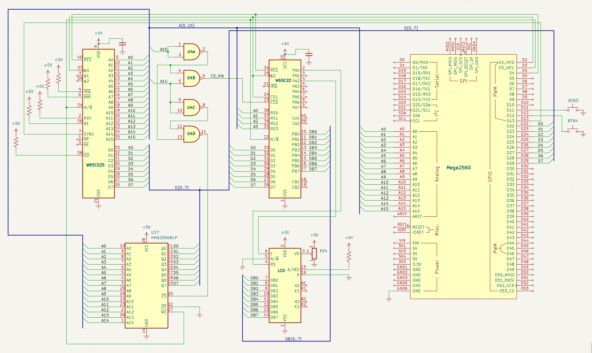

Steg 9 — Riktigt RAM (62256 SRAM)
Mål
Hittills har Arduino emulerat allt minne — varje gång CPU:n läser eller skriver en byte är det Arduino som svarar. Det fungerar utmärkt för inlärning och felsökning, men en riktig dator har riktigt minne. Nu tar vi steget och kopplar in ett 62256 SRAM-chip — 32 kilobyte statiskt RAM i en DIP-28-kapsel.
SRAM-chippet tar över adresserna $0000–$3FFF (16 KB). Det täcker zero page, stacken och gott om utrymme för variabler. Arduino fortsätter att leverera programkoden från $8000 och uppåt, samt vektorerna på $FFFA–$FFFF. VIA:n ligger kvar på $4000–$400F.
Den stora förändringen i koden: Arduino går tri-state (hög impedans) för alla adresser under $4000. När CPU:n läser från $0200 är det SRAM-chippet som lägger ut data på bussen — inte Arduino. Vi har nu tre enheter som delar på databussen: SRAM, VIA och Arduino.
Nya komponenter
Plocka fram dessa ur komponentlådan. Inga överraskningar — bara det som tillkommer i detta steg.
| Antal | Komponent |
|---|---|
| 1 | 62256 SRAM (32KB, DIP-28) |
| 1 | 100 nF keramisk kondensator (avkoppling SRAM) |
| – | Kopplingstråd (adress, data, kontroll) |
62256 SRAM — pinout
DIP-28-kapsel. 15 adresslinjer, 8 datalinjer, 3 kontrollsignaler. Här ser du exakt hur kretsen ska vändas och vad varje pinne gör.
■ Adressbuss ■ Databuss ■ Kontroll ■ Ström. Notch/pin 1-markering: uppåt. /OE = GND (alltid läs ut). /CE = U4D pin 11 (aktiv vid $0000–$3FFF).
74HC00 — pinout
DIP-14-kapsel. Alla fyra grindar används nu: U4A+U4B för VIA (steg 7), U4C+U4D för SRAM (steg 9).
■ U4A (NOT A15 → SRAM /CE) ■ U4B (A15 NAND A14 → VIA /CS2) ■ U4D (NAND) ■ U4C (NAND).
Kopplingsschema
SRAM-chippet delar adress- och databuss med CPU, VIA och Arduino. Tre kontrollsignaler avgör vem som pratar.

Kopplingar
Alla kopplingar för detta steg — CPU, SRAM, VIA, 74HC00, LCD. Varje pinne, vart den går, och varför.
62256 SRAM
| Pin | Signal | Kopplas till | Varför |
|---|---|---|---|
| 28 | VDD | +5V | Strömmatning — glöm inte 100nF avkoppling till GND |
| 14 | VSS | GND | Systemjord |
| 10–3, 25, 24, 21, 23, 2, 26, 1 | A0–A14 | A0–A14 | 15 adresslinjer — SRAM behöver veta vilken byte CPU:n vill åt |
| 11–13, 15–19 | D0–D7 | D0–D7 (databuss) | 8 datalinjer — SRAM läser/skriver data här |
| 20 | /CE | U4D pin 11 | Chip Enable — LÅG = SRAM aktivt. 74HC00 drar LÅG vid $0000–$3FFF |
| 22 | /OE | GND | Output Enable — alltid LÅG (SRAM kör alltid ut data vid läsning) |
| 27 | /WE | R/W (pin 34) | Write Enable — LÅG = skriv. CPU:ns R/W är LÅG vid skrivning |
74HC00 — adressavkodning för SRAM
U4A (NOT A15) och U4B (NAND för VIA) är oförändrade från steg 7. U4C blir NOT A14. U4D gör (NOT A14) NAND (NOT A15) → LÅG endast vid $0000–$3FFF.
| Pin | Grind | Kopplas till | Varför |
|---|---|---|---|
| VIA-avkodning (U4A + U4B — oförändrad från steg 7) | |||
| 1, 2 | U4A in | A15 | Båda ingångarna till A15 → inverterare: ut = NOT A15 |
| 3 | U4A ut | U4B pin 4 + U4D pin 13 | NOT A15 → till U4B och U4D |
| 4 | U4B in | U4A pin 3 (NOT A15) | NOT A15 |
| 5 | U4B in | A14 | (NOT A15) NAND A14 → LÅG vid $4000–$7FFF |
| 6 | U4B ut | VIA /CS2 (pin 23) | VIA aktiveras vid $4000–$7FFF |
| SRAM-avkodning (U4C + U4D — nytt i steg 9) | |||
| 9, 10 | U4C in | A14 | Båda ingångarna till A14 → inverterare: ut = NOT A14 |
| 8 | U4C ut | U4D pin 12 | NOT A14 → U4D ingång |
| 12 | U4D in | U4C pin 8 (NOT A14) | NOT A14 |
| 13 | U4D in | U4A pin 3 (NOT A15) | (NOT A14) NAND (NOT A15) → LÅG endast vid $0000–$3FFF |
| 11 | U4D ut | SRAM /CE (pin 20) | SRAM aktiveras ENDAST vid $0000–$3FFF |
| 14 | VCC | +5V | Strömmatning |
| 7 | GND | GND | Systemjord |
Logik: U4A inverterar A15, U4C inverterar A14. U4D gör (NOT A14) NAND (NOT A15) → LÅG endast när A14=0 OCH A15=0. SRAM aktiveras alltså vid $0000–$3FFF och ingen annanstans. VIAn (U4B) aktiveras vid $4000–$7FFF. Inga krockar.
CPU, VIA och LCD
CPU, VIA och LCD är oförändrade från steg 7. Här är den kompletta kopplingslistan.
| Pin | Signal | Kopplas till | Varför |
|---|---|---|---|
| — ström och kontroll | |||
| 8 | VDD | +5V | Strömmatning |
| 21 | VSS | GND | Systemjord |
| 37 | PHI2 | Arduino D2 | Klocka — 20 Hz fyrkantsvåg |
| 34 | R/W | Arduino D3, VIA pin 22, SRAM /WE | Read/Write — alla kretsar behöver veta |
| 40 | /RESET | Arduino D4, VIA pin 34 | Reset |
| 2 | RDY | +5V via 10kΩ | Ready — HÖG = kör |
| 4 | /IRQ | +5V via 10kΩ | Interrupt — avaktiverad |
| 6 | /NMI | +5V via 10kΩ | NMI — avaktiverad |
| 36 | BE | +5V via 10kΩ | Bus Enable — HÖG = bussar aktiva |
| 38 | /SO | +5V via 10kΩ | Set Overflow — avaktiverad |
| — adressbuss (delas med SRAM, VIA, Arduino) | |||
| 9–16 | A0–A7 | Arduino A0–A7, SRAM A0–A7, VIA RS0–RS3 (A0–A3) | Låga adressbyte |
| 17–20, 22–25 | A8–A15 | Arduino A8–A15, SRAM A8–A14, 74HC00 | Höga adressbyte + avkodning |
| — databuss (delas med SRAM, VIA, Arduino) | |||
| 26–33 | D0–D7 | Arduino D22–D29, SRAM D0–D7, VIA D0–D7 | 8-bit data — 100Ω seriemotstånd |
| Övrigt | |||
| 7 | SYNC | Arduino D13 | Opcode fetch |
| — | BTN1 | Arduino D11 → GND | Klocksteg |
| — | BTN2 | Arduino D12 → GND | Instruktionssteg |
| VIA → LCD (oförändrat från steg 7) | |||
| VIA 2 | PA0 | LCD 4 (RS) | Register Select |
| VIA 4 | PA2 | LCD 6 (E) | Enable |
| VIA 10–17 | PB0–PB7 | LCD 7–14 (DB0–DB7) | 8-bit data |
| LCD — ström och kontrast | |||
| LCD 1 | VSS | GND | Jord |
| LCD 2 | VDD | +5V | Ström |
| LCD 3 | VO | Potentiometer mittben | Kontrast |
| LCD 5 | R/W | GND | Write-only |
| LCD 15 | A | +5V via 220Ω | Belysning + |
| LCD 16 | K | GND | Belysning − |
Minneskarta — tre enheter delar på bussen
Nu har vi tre enheter som svarar på olika adressområden. SRAM tar den lägre halvan, VIA har sina 16 bytes, och Arduino levererar program och vektorer.
Grön heldragen ram = 62256 SRAM. Gul = VIA. Blå/lila = Arduino. Tre enheter, en buss — adressavkodningen avgör vem som svarar.
Arduino-kod
Den stora förändringen: is_sram() kollar om adressen är under $4000. I så fall rör inte Arduino databussen — SRAM-chippet sköter allt.
// Steg 9 — Riktigt RAM (62256 32KB SRAM)
// Baserat på steg 7: först visa 4-raders text via VIA/LCD,
// sedan vänta på knapptryck, kör RAM-test.
// SRAM på $0000–$3FFF, VIA på $4000, program på $8000+ (Arduino).
#include <Arduino.h>
#include "program_fib.h" // Fibonacci-program, byggt med ca65
#define PHI2 2
#define RESB 4
#define RWB 3
#define SYNC 13
#define BTN_CLK 11
#define BTN_INSTR 12
#define CLOCK_HZ 500 // Klockfrekvens i Hz
#define CLOCK_DELAY (1000 / (CLOCK_HZ * 2)) // ms per klockfas
uint8_t program[2048]; // $8000–$87FF (6502-program)
uint8_t vectors[6]; // $FFFA–$FFFF
// ==== INGEN Arduino-LCD — all LCD-output går via 6502 → VIA ====
bool debug_pulse = false; // Styr loggutskrift i pulse()
#define VIA_BASE 0x4000
#define SRAM_END 0x3FFF
// --- is_sram() — hanteras av fysisk 62256 ---
bool is_sram(uint16_t addr) { return addr <= SRAM_END; }
// --- is_via() — hanteras av fysisk W65C22 ---
bool is_via(uint16_t addr) {
return (addr >= VIA_BASE && addr < VIA_BASE + 16);
}
// --- read_mem() — Arduino svarar bara utanför SRAM/VIA ---
uint8_t read_mem(uint16_t addr) {
if (is_sram(addr)) return 0; // SRAM svarar
if (is_via(addr)) return 0; // VIA svarar
if (addr >= 0xFFFA && addr <= 0xFFFF)
return vectors[addr - 0xFFFA];
if (addr >= 0x8000 && addr < 0x8000 + sizeof(program))
return program[addr - 0x8000];
return 0xEA;
}
// --- write_mem() — spara, men bara utanför SRAM/VIA ---
void write_mem(uint16_t addr, uint8_t val) {
if (is_sram(addr)) return; // SRAM tar emot
if (is_via(addr)) return; // VIA tar emot
if (addr >= 0xFFFA && addr <= 0xFFFF)
{ vectors[addr - 0xFFFA] = val; return; }
if (addr >= 0x8000 && addr < 0x8000 + sizeof(program))
{ program[addr - 0x8000] = val; return; }
}
// --- pulse() — en klockcykel, Arduino tri-state för SRAM och VIA ---
void pulse() {
digitalWrite(PHI2, LOW);
DDRA = 0x00; // Tri-state direkt
delay(CLOCK_DELAY);
uint8_t kl = PINF;
uint8_t kh = PINK;
uint16_t a = (kl << 0) | (kh << 8);
bool rw = digitalRead(RWB);
// Arduino svarar ENDAST om adressen inte är SRAM eller VIA
if (rw && !is_sram(a) && !is_via(a)) {
DDRA = 0xFF;
PORTA = read_mem(a);
}
digitalWrite(PHI2, HIGH);
delay(CLOCK_DELAY);
if (!rw && !is_sram(a) && !is_via(a)) write_mem(a, PINA);
// Diagnostik (tyst under bulk-körning)
static int count = 0;
if (debug_pulse) {
count++;
if (count % 20 == 0 || is_via(a) || is_sram(a) || a == 0xFFFC || a == 0xFFFD) {
Serial.print(rw ? "R" : "W");
Serial.print(" $");
Serial.print(a, HEX);
if (is_sram(a)) Serial.print(" <- SRAM");
else if (is_via(a)) Serial.print(" <- VIA");
else if (a >= 0x8000 && a < 0xFFFA) {}
else if (a == 0xFFFC) Serial.print(" <- RESET-VEKTOR LAG");
else if (a == 0xFFFD) Serial.print(" <- RESET-VEKTOR HOG");
Serial.println();
}
}
}
// ================================================================
// Ladda 6502-program (samma 4-raders LCD-program som steg 7)
// ================================================================
void load_hello_program() {
uint16_t next = 0x8000;
// Reset-vektor → $8000
write_mem(0xFFFC, 0x00);
write_mem(0xFFFD, 0x80);
// --- Sätt VIA-portar som utgångar ---
write_mem(next++, 0xA9); write_mem(next++, 0xFF); // LDA #$FF
write_mem(next++, 0x8D); write_mem(next++, 0x02); write_mem(next++, 0x40); // STA $4002 (DDRB)
write_mem(next++, 0x8D); write_mem(next++, 0x03); write_mem(next++, 0x40); // STA $4003 (DDRA)
// --- Skicka $30 tre gånger (tvinga 8-bit mode) ---
for (int i = 0; i < 3; i++) {
write_mem(next++, 0xA9); write_mem(next++, 0x30);
write_mem(next++, 0x8D); write_mem(next++, 0x00); write_mem(next++, 0x40);
write_mem(next++, 0xA9); write_mem(next++, 0x04);
write_mem(next++, 0x8D); write_mem(next++, 0x01); write_mem(next++, 0x40);
write_mem(next++, 0xA9); write_mem(next++, 0x00);
write_mem(next++, 0x8D); write_mem(next++, 0x01); write_mem(next++, 0x40);
}
// --- Function Set: 8-bit, 2 rader, 5x8 ---
write_mem(next++, 0xA9); write_mem(next++, 0x38);
write_mem(next++, 0x8D); write_mem(next++, 0x00); write_mem(next++, 0x40);
write_mem(next++, 0xA9); write_mem(next++, 0x04);
write_mem(next++, 0x8D); write_mem(next++, 0x01); write_mem(next++, 0x40);
write_mem(next++, 0xA9); write_mem(next++, 0x00);
write_mem(next++, 0x8D); write_mem(next++, 0x01); write_mem(next++, 0x40);
// --- Display ON, cursor OFF ---
write_mem(next++, 0xA9); write_mem(next++, 0x0C);
write_mem(next++, 0x8D); write_mem(next++, 0x00); write_mem(next++, 0x40);
write_mem(next++, 0xA9); write_mem(next++, 0x04);
write_mem(next++, 0x8D); write_mem(next++, 0x01); write_mem(next++, 0x40);
write_mem(next++, 0xA9); write_mem(next++, 0x00);
write_mem(next++, 0x8D); write_mem(next++, 0x01); write_mem(next++, 0x40);
// --- Clear Display ---
write_mem(next++, 0xA9); write_mem(next++, 0x01);
write_mem(next++, 0x8D); write_mem(next++, 0x00); write_mem(next++, 0x40);
write_mem(next++, 0xA9); write_mem(next++, 0x04);
write_mem(next++, 0x8D); write_mem(next++, 0x01); write_mem(next++, 0x40);
write_mem(next++, 0xA9); write_mem(next++, 0x00);
write_mem(next++, 0x8D); write_mem(next++, 0x01); write_mem(next++, 0x40);
// --- Entry Mode: increment, no shift ---
write_mem(next++, 0xA9); write_mem(next++, 0x06);
write_mem(next++, 0x8D); write_mem(next++, 0x00); write_mem(next++, 0x40);
write_mem(next++, 0xA9); write_mem(next++, 0x04);
write_mem(next++, 0x8D); write_mem(next++, 0x01); write_mem(next++, 0x40);
write_mem(next++, 0xA9); write_mem(next++, 0x00);
write_mem(next++, 0x8D); write_mem(next++, 0x01); write_mem(next++, 0x40);
// --- Rad 1: "=== 6502 VIA LCD ===" ---
write_mem(next++, 0xA9); write_mem(next++, 0x80);
write_mem(next++, 0x8D); write_mem(next++, 0x00); write_mem(next++, 0x40);
write_mem(next++, 0xA9); write_mem(next++, 0x04);
write_mem(next++, 0x8D); write_mem(next++, 0x01); write_mem(next++, 0x40);
write_mem(next++, 0xA9); write_mem(next++, 0x00);
write_mem(next++, 0x8D); write_mem(next++, 0x01); write_mem(next++, 0x40);
write_mem(next++, 0xA9); write_mem(next++, 0x01);
write_mem(next++, 0x8D); write_mem(next++, 0x01); write_mem(next++, 0x40);
const char* line1 = "=== Steg 9 SRAM ===";
for (const char* p = line1; *p; p++) {
write_mem(next++, 0xA9); write_mem(next++, *p);
write_mem(next++, 0x8D); write_mem(next++, 0x00); write_mem(next++, 0x40);
write_mem(next++, 0xA9); write_mem(next++, 0x05);
write_mem(next++, 0x8D); write_mem(next++, 0x01); write_mem(next++, 0x40);
write_mem(next++, 0xA9); write_mem(next++, 0x01);
write_mem(next++, 0x8D); write_mem(next++, 0x01); write_mem(next++, 0x40);
}
// --- Rad 2: "Tryck pa knapp..." ---
write_mem(next++, 0xA9); write_mem(next++, 0xC0);
write_mem(next++, 0x8D); write_mem(next++, 0x00); write_mem(next++, 0x40);
write_mem(next++, 0xA9); write_mem(next++, 0x04);
write_mem(next++, 0x8D); write_mem(next++, 0x01); write_mem(next++, 0x40);
write_mem(next++, 0xA9); write_mem(next++, 0x00);
write_mem(next++, 0x8D); write_mem(next++, 0x01); write_mem(next++, 0x40);
write_mem(next++, 0xA9); write_mem(next++, 0x01);
write_mem(next++, 0x8D); write_mem(next++, 0x01); write_mem(next++, 0x40);
const char* line2 = "Tryck pa knapp...";
for (const char* p = line2; *p; p++) {
write_mem(next++, 0xA9); write_mem(next++, *p);
write_mem(next++, 0x8D); write_mem(next++, 0x00); write_mem(next++, 0x40);
write_mem(next++, 0xA9); write_mem(next++, 0x05);
write_mem(next++, 0x8D); write_mem(next++, 0x01); write_mem(next++, 0x40);
write_mem(next++, 0xA9); write_mem(next++, 0x01);
write_mem(next++, 0x8D); write_mem(next++, 0x01); write_mem(next++, 0x40);
}
// --- Halt-loop (vänta på omstart efter knapptryck) ---
uint16_t halt1 = next;
write_mem(next++, 0x4C); // JMP
write_mem(next++, halt1 & 0xFF); // låg byte
write_mem(next++, (halt1 >> 8) & 0xFF); // hög byte
}
// ================================================================
// Ladda Fibonacci-program från assembler-bygge (program_fib.h)
// ================================================================
void load_fibonacci_program() {
memset(program, 0, sizeof(program));
// Ladda program ($8000–$87FF) — 2048 bytes
for (unsigned int i = 0; i < 2048; i++) {
write_mem(0x8000 + i, pgm_read_byte(&PROGRAM_FIB[i]));
}
// Ladda vektorer ($FFFA–$FFFF) — sista 6 byten
for (unsigned int i = 0; i < 6; i++) {
write_mem(0xFFFA + i, pgm_read_byte(&PROGRAM_FIB[2048 + i]));
}
}
// ================================================================
// setup()
// ================================================================
void setup() {
pinMode(RESB, OUTPUT); digitalWrite(RESB, LOW);
pinMode(PHI2, OUTPUT); digitalWrite(PHI2, LOW);
pinMode(SYNC, INPUT);
pinMode(BTN_CLK, INPUT_PULLUP);
pinMode(BTN_INSTR, INPUT_PULLUP);
pinMode(RWB, INPUT);
Serial.begin(115200);
DDRK = 0x00; DDRF = 0x00; DDRA = 0x00;
Serial.println("Steg 9 — 62256 SRAM");
Serial.println("Fas 1: Laddar 4-raders VIA/LCD-program...");
// --- Fas 1: Visa 4-raders text (samma som steg 7) ---
load_hello_program();
// Reset och kör
digitalWrite(RESB, LOW);
for (int i = 0; i < 5; i++) pulse();
digitalWrite(RESB, HIGH);
// Kör ~2500 cykler så LCD-init + text hinner visas
Serial.println("Kor 1000 cykler (tyst)...");
for (int i = 0; i < 1000; i++) pulse();
debug_pulse = true;
Serial.println("Fas 1 klar — vantar pa knapptryck...");
// --- Vänta på knapptryck ---
bool knapp_tryckt = false;
unsigned long last_msg = 0;
while (!knapp_tryckt) {
bool b1 = !digitalRead(BTN_CLK);
bool b2 = !digitalRead(BTN_INSTR);
if (b1 || b2) {
delay(50);
b1 = !digitalRead(BTN_CLK);
b2 = !digitalRead(BTN_INSTR);
if (b1 || b2) {
knapp_tryckt = true;
Serial.print(">>> Knapp ");
Serial.print(b1 ? "1" : "2");
Serial.println(" tryckt! <<<");
}
}
if (millis() - last_msg > 2000) {
Serial.println("Vantar pa knapp...");
last_msg = millis();
}
}
Serial.println("Laddar Fibonacci-program...");
// --- Fas 2: Kör Fibonacci-program ---
digitalWrite(RESB, LOW);
for (int i = 0; i < 10; i++) pulse();
load_fibonacci_program();
digitalWrite(RESB, HIGH);
debug_pulse = true; // Visa Fibonacci-utskrifter i loggen
for (int i = 0; i < 8000; i++) pulse();
Serial.println("Fibonacci-program kört.");
}
// ================================================================
// loop()
// ================================================================
void loop() {
// Efter setup() kan användaren trycka på knapp igen
// för att stega manuellt
if (!digitalRead(BTN_CLK)) {
delay(50); while (!digitalRead(BTN_CLK)); delay(50);
pulse();
}
if (!digitalRead(BTN_INSTR)) {
delay(50); while (!digitalRead(BTN_INSTR)); delay(50);
do { pulse(); } while (!digitalRead(SYNC));
}
}
6502-programmet — Fibonacci i assembler
Fil: asm/program_fib.asm. Initierar VIA + LCD, visar "Fib:" på rad 1, och räknar ut Fibonacci-sekvensen 0–233 med decimalutskrift på rad 2. Byggs med ca65 till program_fib.h.
; ================================================================
; Fibonacci-program för 6502 — VIA LCD
; ================================================================
; Räkna ut Fibonacci-sekvensen och visa varje tal på LCD.
; 8-bitars: 0, 1, 1, 2, 3, 5, 8, 13, 21, 34, 55, 89, 144, 233
; Efter 233 wrappar det (byte overflow) och börjar om från 0.
;
; Minneskarta:
; $00 = F(n-2) — föregående föregående tal
; $01 = F(n-1) — föregående tal
; $02 = F(n) — aktuellt tal (temporärt)
; $10 = temporär lagring under decimalutskrift
VIA_ORB = $4000 ; PORTB — LCD:ns 8 datapinnar
VIA_ORA = $4001 ; PORTA — bit 0 = RS, bit 2 = E
VIA_DDRB = $4002 ; Data Direction för port B
VIA_DDRA = $4003 ; Data Direction för port A
.segment "CODE"
.org $8000
; ================================================================
; RESET — processorns startpunkt
; ================================================================
reset:
; --- Gör VIA-portarna till utgångar ---
lda #$FF ; 255 = alla pinnar som utgång
sta VIA_DDRB
sta VIA_DDRA
; --- LCD-initiering (standard för HD44780) ---
lda #$30 ; "Wake up" — tvinga 8-bitarsläge
jsr lcd_cmd
lda #$30 ; Andra gången
jsr lcd_cmd
lda #$30 ; Tredje gången — nu är LCD garanterat i 8-bit
jsr lcd_cmd
lda #$38 ; Function set: 8-bit, 2 rader, 5×8 font
jsr lcd_cmd
lda #$0C ; Display ON, markör AV, blink AV
jsr lcd_cmd
lda #$01 ; Clear display — töm skärmen
jsr lcd_cmd
lda #$06 ; Entry mode — markören går åt höger
jsr lcd_cmd
; --- Skriv "Fib:" på rad 1 ---
lda #$80 ; Sätt markören till rad 1, position 0
jsr lcd_cmd
lda #$01 ; RS=1 — nu skickar vi teckendata
sta VIA_ORA
ldx #0 ; Teckenräknare = 0
@l1:
lda txt_fib,x ; Hämta tecken från strängen "txt_fib"
beq @l1done ; Om tecknet är 0 — strängen är slut
jsr lcd_data ; Skicka tecknet till LCD
inx ; Peka på nästa tecken
jmp @l1 ; Loop
@l1done:
; --- Initiera Fibonacci-variabler ---
lda #0
sta $00 ; F(0) = 0 — första talet i serien
lda #1
sta $01 ; F(1) = 1 — andra talet i serien
; --- Visa F(0) = 0 på LCD ---
lda #0 ; Visa talet 0
jsr show_num ; Subrutin: konvertera till decimal och skriv
jsr delay_ms ; Pausa så man hinner se talet
; --- Visa F(1) = 1 på LCD ---
lda #1
jsr show_num
jsr delay_ms
; ================================================================
; FIBONACCI-LOOP — hjärtat i programmet
; ================================================================
fib_loop:
; --- Beräkna nästa tal: F(n) = F(n-1) + F(n-2) ---
clc ; Rensa carry-flaggan före addition
lda $00 ; Hämta F(n-2)
adc $01 ; Addera F(n-1) — resultat i A-registret
bcc no_wrap ; Om ingen overflow (carry clear) — fortsätt
; --- Overflow! Återställ serien ---
; När talet blir större än 255 wrappar vi tillbaka
lda #0
sta $00 ; F(n-2) = 0
lda #1
sta $01 ; F(n-1) = 1
jmp fib_loop ; Börja om från F(0)=0
no_wrap:
sta $02 ; Spara F(n) temporärt
; --- Skifta: F(n-2) ← F(n-1), F(n-1) ← F(n) ---
lda $01 ; Hämta gamla F(n-1)
sta $00 ; Det blir nya F(n-2)
lda $02 ; Hämta F(n)
sta $01 ; Det blir nya F(n-1)
; --- Visa talet på LCD ---
jsr show_num ; Konvertera till decimal och skriv ut
jsr delay_ms ; Paus
jmp fib_loop ; Nästa tal!
; ================================================================
; SUBRUTIN: delay_ms — vänta en kort stund
; ================================================================
; Två nästlade loopar: X räknar ner från 5, Y från 5.
; 5 × 5 × 2 instruktioner = ~50 cykler ≈ 1 sekund vid 50 Hz.
delay_ms:
ldx #5
dly_outer:
ldy #5
dly_inner:
dey ; Y = Y - 1
bne dly_inner ; Inte noll? Gå ett varv till
dex ; X = X - 1
bne dly_outer ; Inte noll? Gå ett varv till
rts
; ================================================================
; SUBRUTIN: show_num — visa A-registret som decimaltal på rad 2
; ================================================================
; Omvandlar ett 8-bitars tal (0–255) till 1–3 ASCII-siffror.
; Exempel: 144 → "144 ", 5 → "5 "
;
; Algoritm:
; 1. Räkna hundratal: subtrahera 100 tills A < 100
; 2. Räkna tiotal: subtrahera 10 tills A < 10
; 3. Resten är ental
; 4. Konvertera varje del till ASCII (+ '0') och visa
show_num:
sta $10 ; Spara värdet för senare användning
; Sätt markören till rad 2, position 0
lda #$C0 ; DDRAM-adress $40 → $C0
jsr lcd_cmd
lda #$01 ; RS = 1 (dataläge)
sta VIA_ORA
; --- Hundratal (0–2) ---
lda $10 ; Återställ värdet
ldx #0 ; X = räknare för hundratal
@h:
cmp #100 ; Är A >= 100?
bcc @t ; Nej — gå till tiotal
inx ; Ja — öka hundratalsräknaren
sec ; Förbered subtraktion
sbc #100 ; A = A - 100
jmp @h ; Kolla igen (kan vara 200+)
@t:
pha ; Spara resten på stacken
txa ; Hundratalsräknare → A
beq @skip_h ; Om 0 — skriv inget hundratal
clc
adc #'0' ; Konvertera till ASCII ('0' = 48)
jsr lcd_data ; Visa hundratalet
@skip_h:
pla ; Återställ resten från stacken
ldx #0 ; Nollställ tiotalräknare
; --- Tiotal (0–9) ---
@tens:
cmp #10 ; Är A >= 10?
bcc @ones ; Nej — gå till ental
inx ; Ja — öka tiotalräknare
sec
sbc #10 ; A = A - 10
jmp @tens ; Kolla igen
@ones:
pha ; Spara entalet på stacken
txa ; Tiotalräknare → A
bne @show_t ; Om inte 0 — visa tiotal
lda $10 ; Kolla ursprungsvärdet
cmp #10 ; Var det >= 10?
bcc @skip_t ; Nej — hoppa över tiotal
@show_t:
txa ; Tiotalräknare → A
clc
adc #'0' ; Konvertera till ASCII
jsr lcd_data ; Visa tiotalet
@skip_t:
pla ; Återställ entalet
clc
adc #'0' ; Konvertera till ASCII
jsr lcd_data ; Visa entalet
; --- Sudda bort gamla siffror ---
; När "144" följs av "5" vill vi inte se "544".
; Två mellanslag rensar resten av raden.
lda #' '
jsr lcd_data
lda #' '
jsr lcd_data
rts
; ================================================================
; SUBRUTIN: lcd_cmd — skicka kommando till LCD (RS=0)
; ================================================================
lcd_cmd:
sta VIA_ORB ; Kommandobyte → PORTB
lda #$04 ; RS=0, E=1 — "kommando, läs nu"
sta VIA_ORA
lda #$00 ; E=0 — fallande flank → LCD läser
sta VIA_ORA
rts
; ================================================================
; SUBRUTIN: lcd_data — skicka teckendata till LCD (RS=1)
; ================================================================
lcd_data:
sta VIA_ORB ; ASCII-tecken → PORTB
lda #$05 ; RS=1, E=1 — "tecken, läs nu"
sta VIA_ORA
lda #$01 ; RS=1, E=0 — fallande flank
sta VIA_ORA
rts
; ================================================================
; Strängdata
; ================================================================
txt_fib:
.byte "Fib:", 0 ; Rad 1 — etikett
; ================================================================
; RESET-VEKTOR — processorns startadress
; ================================================================
.segment "VECTORS"
.org $FFFA
.word $0000 ; NMI — oanvänd
.word reset ; RESET — pekar på $8000
.word $0000 ; IRQ — oanvändKomplett assembler-kod: Mega_2560_6502/asm/program_fib.asm. Byggs med ca65 + ld65 → program_fib.h → inkluderas av step9.inc.
Testning och felsökning
- Ladda upp med
pio run -e step9 -t upload -t monitor - I serieövervakaren: adresser under $4000 ska markeras med
<- SRAM - Tryck på instruktionssteg — följ programflödet. STX $0200 ska visa
W $0200 <- SRAM
Om det inte fungerar
- CPU:n läser $0000 vid reset? SRAM-chipets /OE är inte GND. Utan /OE=LÅG driver SRAM inte ut data vid läsning.
- Databuss-krockar? Arduino får INTE sätta DDRA=0xFF vid SRAM-adresser. Kontrollera att
is_sram()returnerar rätt. - SRAM skriver inte? /WE måste gå till R/W (pin 34). /CE måste vara avkodad korrekt via 74HC00.
- Glitchar på bussen? 62256 är snabbare än Arduino. Se till att /CE och /WE är stabila innan databussen läses.